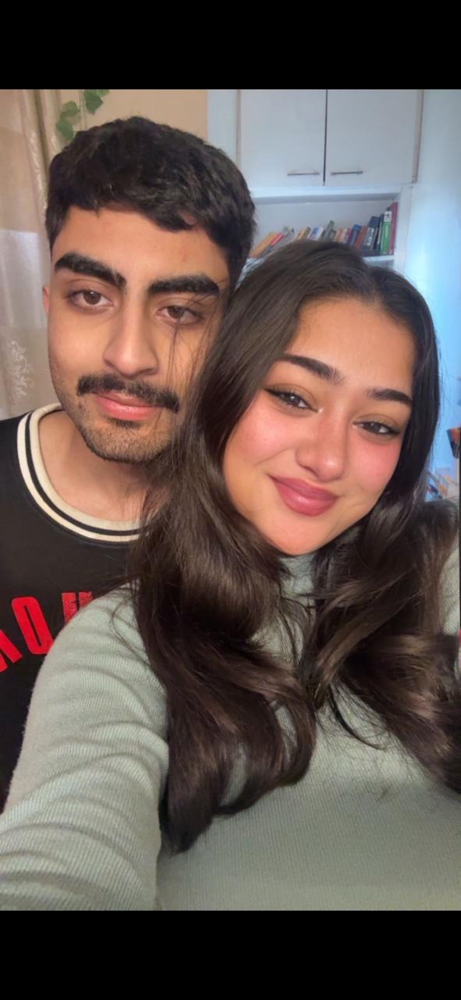
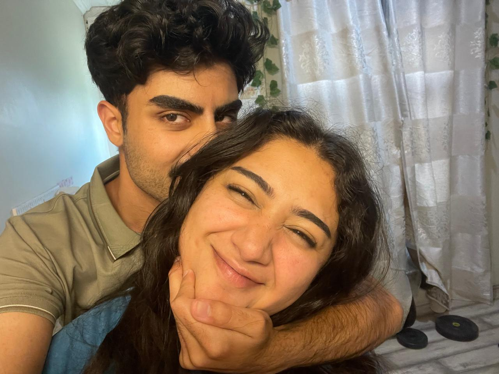
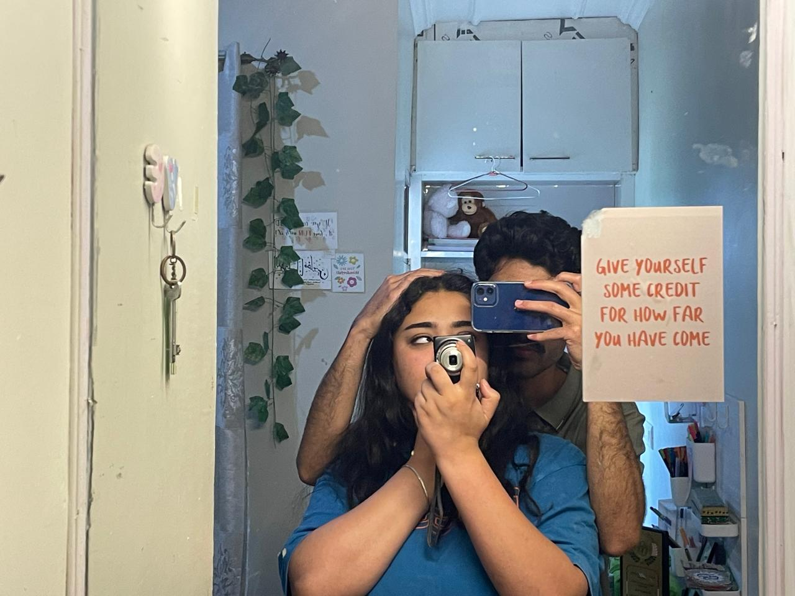
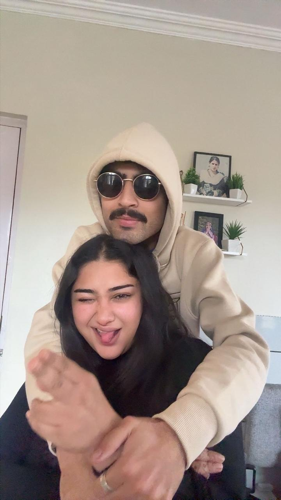
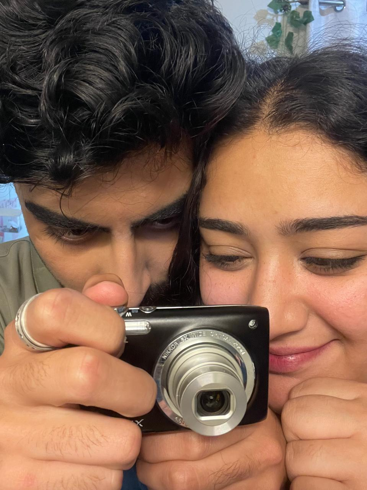
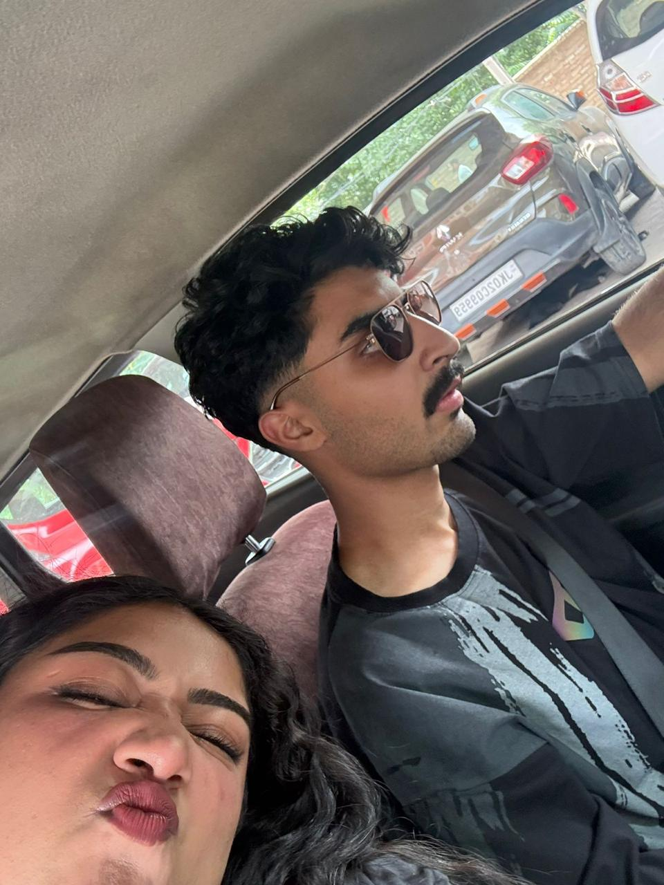
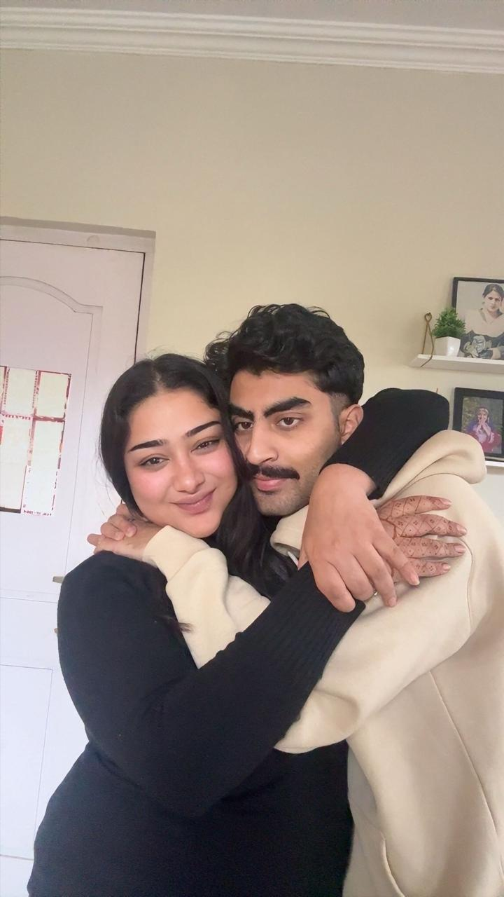

put your volume up, love. sit down somewhere quiet before you open this — i wrote all of it for you, and i mean every word.
playing
Chapter One
I didn't forget you. I could never forget you.
first — about the post. i know how it looked. i know it probably stung, seeing me go quiet like that, like i didn't even remember what day it was, like i was somewhere else entirely instead of with you in the way i should've been. i'm sorry for that. genuinely. i'm sorry it hurt, even for a minute.
but here's the truth: while you were seeing that and wondering where i'd gone, i was heads-down building this, for you, trying to get every word right. i wasn't distracted. i wasn't careless. i was just quietly, clumsily trying to love you louder than a caption ever could.
I know exactly what I did. I let you believe, even for a moment, that I'd forgotten our day — and I hated every second of it. I watched you go quiet. I watched you try not to let it show, and pretend it was fine, the way you always do when you don't want to be a bother to anyone. And the whole time, all I wanted to do was pull you close and tell you it was a lie. I didn't, because I wanted to give you something that actually matched how much you mean to me — not just an excuse, not just a "sorry."
You are not a checkbox on a calendar to me, jaan. You are the first person I think of when something good happens and the only person I want near me when something bad does. Not for one second did you slip my mind. Not one. I just wanted to love you loud enough that you'd never have to wonder again.
If you're sitting there a little hurt, a little annoyed — I understand, and I'm sorry for the ache I put there, even for an hour. That was the one part of this I regret. Everything after this page is me trying to make it right, and trying to say the things I don't say enough: that I see you, I choose you, and I am so unbelievably lucky that you love me back.
Chapter Two
Even on your hardest days, my love, you're still holding everyone up.
This week hasn't been kind to you. Your body has been asking you, quietly and then not so quietly, to just stop for a minute — and you haven't listened once, because that's not who you are. You keep going. You keep smiling for people. You keep making sure everyone around you is okay before you ever check on yourself. I see it, and some nights it makes my chest hurt.
I notice everything, jaan. I notice it in how quiet you get when you're tired but won't say it. I notice you pushing through the pain and the low days anyway, just to make sure Zia is fine, mumma and papa are fine, nani is fine — before you ever once ask if you are fine. You have the softest, biggest heart I have ever known, and you keep spending it on everyone else first. I want, more than almost anything, for you to let someone spend all that softness back on you. Let it be me.
for Zia — your little brother is a menace and you know it, and you still drop everything for him like it costs you nothing. it does cost you something. i see the cost, and i love you more for paying it so gladly.
for mumma & papa — you carry their worry so gently that it weighs less on them, and so much more on you than anyone around you realises. i wish you'd let me carry some of it too.
for nani — you make her feel remembered and adored every single time, without ever once being asked to. that kind of love isn't taught. it's just who you are.
for me — you make me feel like I never have to face anything alone again. loving you is the softest, easiest, most certain thing in my entire life.
You take care of an entire house of people while running on empty, and somehow you still lie awake thinking you're the one who isn't doing enough. You are enough, my love. You have always been enough, and then some, and then some more. I'm not always good at saying that out loud when you need to hear it — that's the whole reason this page exists. So hear it now, plainly: you are so deeply loved. Let me take care of you for a while. It's my turn.
Chapter Three
how much i love you (an incomplete list)
I don't think I've ever said this properly, so let me try now, without a joke to hide behind and without rushing through it. I love you in a way that has quietly rearranged my whole life around you, without me even noticing it happening. You are not a part of my life, jaan. You are the shape of it now.
I love you in the loud ways and the small, forgettable ones. Here is some of it, the parts I can actually put into words:
the way you get embarrassingly excited over the smallest, silliest things, like it's the best news you've heard all week.
how you say my name when you're pretending to be annoyed with me but are already trying not to smile.
your sleepy, half-awake morning voice — it might be my favourite sound in the world.
the way you fight for the people you love, loudly and fiercely, even on days you have nothing left to fight with.
how safe and certain your hand feels in mine, like it was always going to end up there.
your ridiculous, specific, wonderful sense of humour that only makes sense to the two of us.
the way you cry at things that actually matter, and laugh so hard at things that don't.
I could keep going for pages, zainny. I love you on your best days and your worst ones, in the middle of the night and the middle of an argument, tired and glowing and everything in between. There is no version of you I don't love. Not one.
Chapter Four
i am so proud of you, zainny
I don't say this enough, and I should say it every single day: I am so proud of you. Not proud of you the way you're proud of a trophy on a shelf — proud of you the way you're proud of someone you've watched fight quietly for their own peace, and keep choosing kindness anyway.
I've watched you carry hard weeks without letting them turn you bitter. I've watched you keep showing up for everyone around you, keep loving loudly, keep laughing, even on the days it would have been so easy to just shut down. That's not small. That takes a kind of strength most people don't even notice because you make it look effortless.
I'm proud of who you were, who you are right now, tired and soft and trying, and who you're still becoming. I'm proud of every version of you I've had the privilege of loving. You don't need to earn that pride, jaan — you already have it, completely, from me, always.
so on the days you doubt yourself — and I know you have them, even if you try to hide them from me — I need you to borrow some of how proud I am of you. hold onto it until you can feel it for yourself again.
Chapter Five
A gallery of every reason I love you the way I do.

this is my favourite kind of ordinary evening — you, close, laughing at something small. i'd give up every extraordinary day just to keep living inside minutes like this one.

that wink could end an argument I haven't even started yet, jaan. it undoes me every time.

give yourself the credit, zainny. you've come further than you let yourself believe, and I am so, so proud of the person you've become.this is what home feels like to me. it was never a place. it has always just been you.

the unserious, tongue-out, no-filter you is the one I fell hardest for, and the one I never want to lose sight of.

foreheads together, world blurred out — this is my favourite kind of quiet, and my favourite version of us.

even mid-pout in traffic you're the best part of the drive, and the best part of every single day I get with you.i could spend chapters describing your eyes and still undersell them. i'll keep trying anyway, for as long as you'll let me.

this hug right here — this is the whole point of everything i do. this is where i want to be, always, for the rest of my life.
Chapter Six
Open the box, love. I hid a little bit of my heart in everything.
Every piece in your kit gets a note, straight from me to you — the things I think but don't always find the right moment to say. Tap them, one at a time, or all at once. Let me love on you for a minute.
(tap an item)
Chapter Seven
The promise
I love you so much it genuinely unsettles me some days. When I go too long without hearing your voice, I feel it in my chest — not annoyance, not distance, just this quiet ache like a part of me is missing until you're back. You are the softest, warmest, most certain thing in my entire life, and I never want you to lie in bed wondering if I see you. I do. I always do.
So here's what I'm promising you, plainly, from the very middle of my heart, no ragebait this time, nothing hidden behind it:
I will never let you feel neglected again and tell myself it's fine to just let it sit. I will say it, and fix it, every time.
On your hardest days, I will be the one taking care of you — not the other way around. You've earned rest. I intend to give it to you.
I will tell you I love you on the ordinary, forgettable Tuesdays, not just the days I owe you an apology.
I will keep noticing you — tired, glowing, quiet, loud, all of them — and love every single version with everything I have.
I will hold your hand through the low days as tightly as I hold it on the good ones. that's not a favour. that's just love.
forever, hopelessly, entirely yours, your favourite headache — who loves you more than he'll ever be able to fit into one page.
One more thing
will you be my girlfriend?
real question, love. no games hidden behind this one. just tap what your heart already knows.